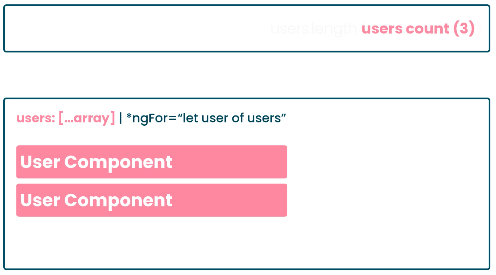
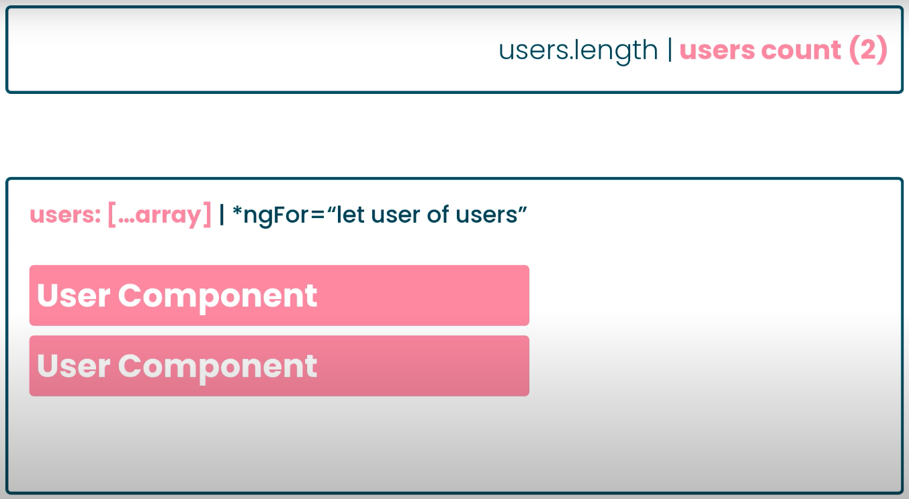
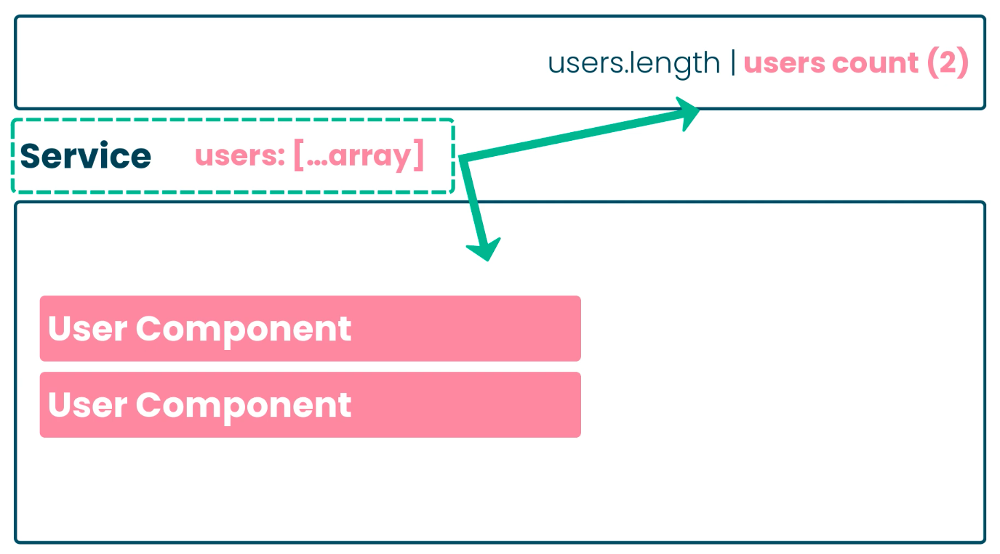

https://hs2504785.github.io/ngdemos/crud/posts
https://hs2504785.github.io/ngdemos/crud/posts/view/1
// State 1
@Component({
selector: 'app-home',
templateUrl: './home.component.html',
styleUrls: ['./home.component.scss'],
})
export class HomeComponent implements OnInit {
isVisible = false;
constructor() {}
}
// State 2
@Component({
selector: 'app-home',
templateUrl: './home.component.html',
styleUrls: ['./home.component.scss'],
})
export class HomeComponent implements OnInit {
isVisible = true;
constructor() {}
}We compose state in our store
Store help with ...
CRUD
observe changes to new state changeshttps://blog.strongbrew.io/do-we-really-need-redux/
Caching API Response - I guess not ( some existing trick mihght be enough )
fetchUsers(): Observable<User[]> {
...
return this.httpClient.get('').pipe(shareReplay(1));
}
// Component 1
this.userService.fetchUsers().subscribe();
// Component 2
this.userService.fetchUsers().subscribe(); // no api call  
{
users: [],
posts: [],
orders: []
}